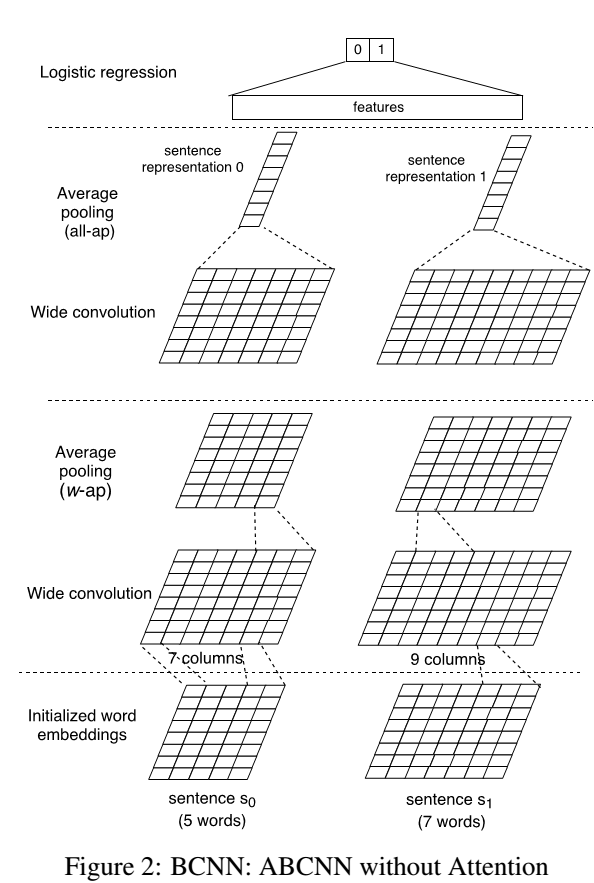
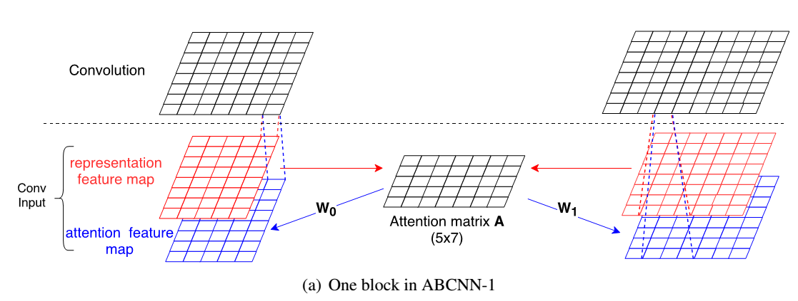
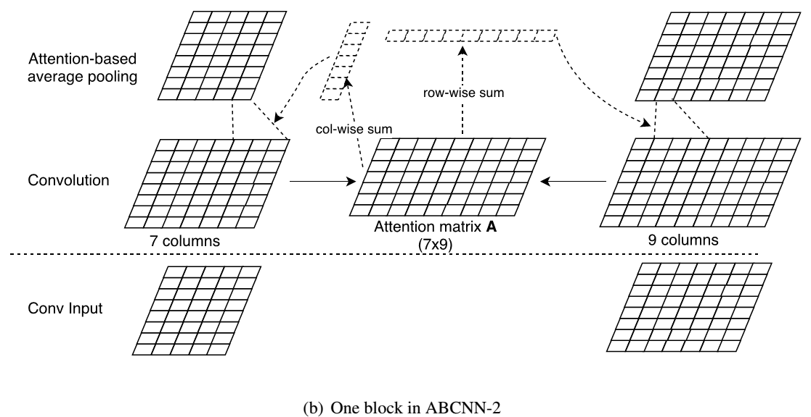
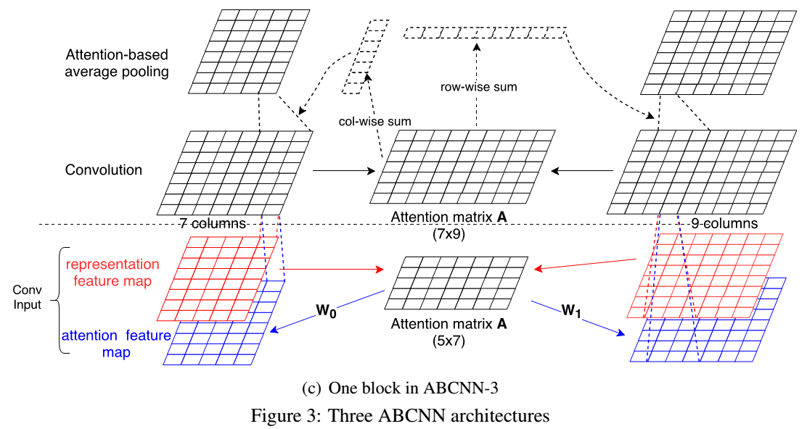

ABCNN
ABCNN是一种基于卷积神经网络CNN和Attention机制的算法，应用于文本分类等业务场景中。
主要思路
BCNN
BCNN结构：使用基本CNN网络（无attention机制），每次处理一对句子，输出层解决sentence pair task.

假设输入两个句子 $s_0$ 和 $s_1$，句子长度分别为 $l_0$ 和 $l_1$。输入的长度取 $s = max(l_0,l_1)$ ,短的补0。
Input layer
每个句子被填充为相同长度$s$，使用词向量映射每个句子为矩阵$ d_0\times s$维矩阵。
Convolution layer
卷积核取$d_0 \times w$,沿词方向做卷积，左右做padding，分别加长度$w-$1 补0。则卷积后得到特征长度为$s + 2 \times (w-1) - w + 1 = s+w-1$。叠加$d_1$ 个卷积核，最终得到新的词向量，维度为$d_1 \times (s+w-1)$ 。卷积核的高须为词向量的维度。
设词向量分别为$v_1,v_2,…,v_s$。记$c_i = [v_{i-w+1},v_{i-w+2},…,v_i]$，$c_i$的维度为$d_0\times w$。$p_i$为卷积$c_i$后的特征，则有：
$$
p=tanh(Wc_i + b)
$$
其中，$W$为卷积核集合，即为卷积权重，其维度为$d_1\times d_0\times w$，$b_i$为对应的偏置。
Pooling layer
沿词的方向，步长为$step$,长度为 $wp $ ,取需要池化的向量$p_i$,维度为 $d_0\times w$,经过池化函数后，维度变为$d_0\times 1 $。池化函数作用的是词向量沿着词维度的特征集合。池化函数可取均值，最大值等。
all-ap：对所有特征列做column-wise的pooling操作，得到 $s \times 1$维度的输出向量
w-ap：卷积核长度设置为$w$，对窗口$w$内的特征列做column-wise的polling操作，得到$s+w-1$的输出向量。
Output layer
就是对整个特征层做池化。输出特征向量后，把两个句子的特征向量拼接起来得到特征。
ABCNN
ABCNN（Attention-Based BCNN）有3种结构，ABCNN-1，ABCNN-2，ABCNN-3。
ABCNN-1

结构中增加了一个抽象层级，就是在原有单词级上增加了一个短语级的抽象。单词级的抽象文中重新命名为unit,作为低级别的表示，短语级的作为更高一级的表示。图中那个红色的与BCNN网络中的输入是一样的，是句子的词向量矩阵，两个句子。第一个句子5个单词，第二个句子7个单词。
蓝色的为短语级高一级的词向量表示。蓝色表示是由Attention Matrix A和红色词向量计算生成
Attention Matrix $A$是由左右两个句子的情况生成。$A$中的 $i$ 列值是由左边句子（五个单词）中第 $i$ 个单词（unit）的向量与右边句子的Attention值分布$j$行值是由右边句子中第$j$个单词的向量与左边句子的Attention值分布
注意力矩阵$A$定义句子间词的关系，即：
$$
A_{i,j}=score(F_{0,r}[:,i],F_{1,r}[:,j])
$$
其中，$F_{i,r[:,k]}$定义为第$i$个句子的第$k$个词向量。
$$
score(x,y)=\frac{1}{1+|x-y|}
$$
生成注意力矩阵后，利用$F_{0,a}=W_0A^T，F_{1,a}=W_1A$ 得到句子对应的注意力特征矩阵。叠加到句子的特征矩阵中，进行卷积。
ABCNN-2

ABCNN-2架构是在以初始词向量形式输入并经过卷积后的输出的向量表示中（两个句子分别变成了7col和9col），计算出Attention Matrix A，计算方法还是计算两个句子对应单词向量的欧式距离，生成向量矩阵，方法同ABCNN-1的架构。
第二步：计算卷积向量权重，给每个单词计算一个权重值。左边句子（7col）的每个单词对应的Attention权重是由Matrix A中列向量求和的值作为权重值，col-wise sum，右边句子中每个单词的权重值是Matrix A中行向量求和值作为权重值，row-wise sum.
$$
a_{0,j}=\sum A[j,:]t
$$
句子原始输入是词向量矩阵，左边的是$5d$，右边是$7d$，$w$是3
$$
F_{i,r}^c \in R^{d\times(s_i+w-1)}
$$
将卷积输出的特征矩阵，基于Attention权重值，做池化。$i$取值为0,1，$j$取值为句子长度。
$$
F_{i,r}^p[:,j]=\sum_{k=j:j+2}a_{i,k}F_{i,r}^c[:,k], j = 1…s_i
$$
ABCNN-1和ABCNN-2比较:
- ABCNN-1中Attention是间接的影响卷积，ABCNN-2中通过Attention权重直接影响池化。
- ABCNN-1需要两个权重矩阵需要学习，并且输入特征矩阵要两次， 相比ABCNN-2网络需要更多的参数学习，容易过拟合。
- ABCNN-2执行更大粒度的池化，如果在卷积层输入的是词粒度的，那么ABCNN-2在池化时就已经是短语粒度的（经过卷积了），池化时的w和卷积的w保持一致。
ABCNN-3

将ABCNN-1和ABCNN-2结合，作为架构，这样保留word level信息，也增加了phrase level的信息。更加高层次的特征抽象。
工程网络图
BCNN
graph BT
subgraph Input Layer
X1("x1 [None, 300, 40]")
X2("x2 [None, 300, 40]")
X1 --> X1_expand("x1_expand [None,300, 40,1]")
X2 --> X2_expand("x2_expand [None,300, 40,1]")
end
X1_expand --all_pool--> left_ap_0("left_ap_0 [None, 300]")
X2_expand --all_pool--> right_ap_0("right_ap_0 [None, 300]")
subgraph CNN Layer 1
X1_expand --"padding (3,3)"--> left_pad_1("left_pad [None, 300, 46, 1]")
X2_expand --"padding (3,3)"--> right_pad_1("right_pad [None, 300, 46, 1]")
left_pad_1 --"convolution (300, 4, 50)"--> left_conv_trans_1("left_conv_trans [None, 50, 43, 1]")
right_pad_1 --"convolution (300, 4, 50)"--> right_conv_trans_1("right_conv_trans [None, 50, 43, 1]")
left_conv_trans_1 --"w_pool (1, 4)"--> left_wp_1("left_wp [None, 50, 40, 1]")
left_conv_trans_1 --"all_pool (1, 43)"--> left_ap_1("left_ap [None, 50]")
right_conv_trans_1 --"w_pool (1, 4)"--> right_wp_1("left_wp [None, 50, 40, 1]")
right_conv_trans_1 --"all_pool (1, 43)"--> right_ap_1("left_ap [None, 50]")
end
subgraph CNN Layer 2
left_wp_1 --"padding (3,3)" --> left_pad_2("left_pad [None, 50, 46, 1]")
right_wp_1 --"padding (3,3)" --> right_pad_2("right_pad [None, 50, 46, 1]")
left_pad_2 --"convolution (50, 4, 50)"--> left_conv_trans_2("left_conv_trans [None, 50, 43, 1]")
right_pad_2 --"convolution (50, 4, 50)"--> right_conv_trans_2("right_conv_trans [None, 50, 43, 1]")
left_conv_trans_2 -- "w_pool (1,4)" --> left_wp_2("left_wp [None, 50, 40, 1]")
left_conv_trans_2 -- "all_pool (1, 43)" --> left_ap_2("left_ap [None, 50]")
right_conv_trans_2 -- "w_pool (1,4)" --> right_wp_2("right_wp [None, 50, 40, 1]")
right_conv_trans_2 -- "all_pool (1, 43)" --> right_ap_2("right_ap [None, 50]")
end
left_ap_0 --cosine -------> sims_0("sims_0 [None, ]")
right_ap_0 --cosine -------> sims_0
left_ap_1 --cosine -----> sims_1("sims_1 [None, ]")
right_ap_1 --cosine -----> sims_1
left_ap_2 --cosine --> sims_2("sims_2 [None, ]")
right_ap_2 --cosine --> sims_2
subgraph Output Layer
sims_0 --stack--> stack_sim("stack_sim [None, 3]")
sims_1 --stack--> stack_sim
sims_2 --stack--> stack_sim
features("features [None, 4]") --concat--> output_features("output_features [None, 7]")
stack_sim --concat--> output_features
output_features --"full connected" --> output("output [None, 2]")
output --softmax--> softmax("softmax [None, ]")
end